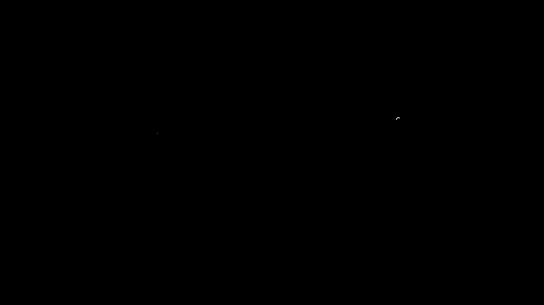
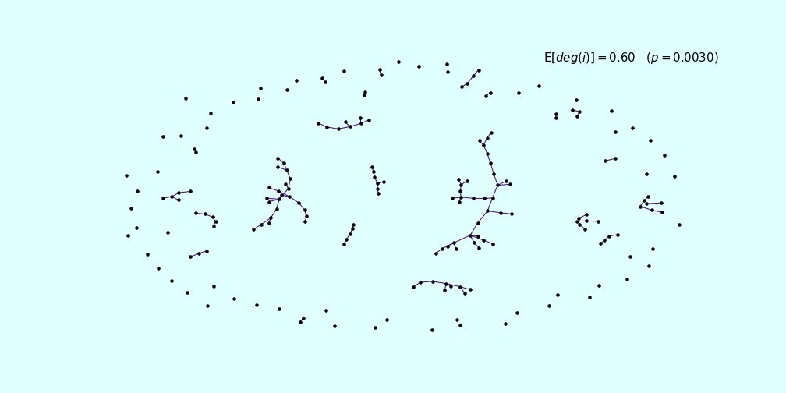

Figure 1: Gaussian samples from pseudo-uniform samples
(Created with Manim)

Figure 2: Erdos-Reyni Random Graph. Construction of a hub (blog comming soon!).
It never hurts to see some random mathematics with no context:
\[\nabla_\phi \mathbb{E}_{q(\mathbf{z}|\phi)}\left[ f(\mathbf{z}) \right] ~=~ \mathbb{E}_{q(\mathbf{z}|\phi)}\,[ f(\mathbf{z})\, \nabla_{\phi} \log q(\mathbf{z}|\phi) ]\] \[\,\,\, f(x^{(k)}) - f^\star \leq \frac{\|x^{(0)} - x^\star\|^2}{2tk},\]Most importantly, when can you say the following:
\[f(y) \leq f(x) + \nabla f(x)^\intercal (x-y) + \frac{L}{2}\|x-y\|^2\]Content:
Blog-posts:
- Find my work for the Randomized Algorithms course that I’m undertaking at the University of Passau.
- Convex Optimization:
- I started a DL project, I’m trying to build an Autodiff “library”.
- Tips and Tricks:
- Matrix Differential Calculus – A few trick to save the day, AKA, enter the matrix.
- Reinforcement learning:
- Github repository.
- Stochastic Approximation and (Asymptotic) Convergence of Q-learning. [Soon]
- Random:
- Discussing the correctness of the plot above. Gaussian Samples
News:
- [04 July 2022] I’m officially enrolled at the university of PASSAU, Computational Mathematics M.Sc.